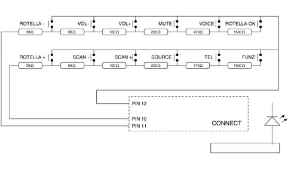
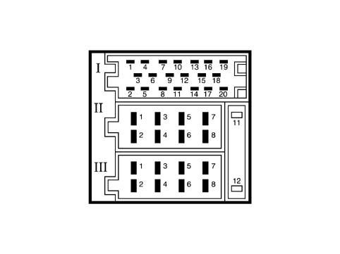

5570TD AUDIO CONTROLS ON STEERING WHEEL CHECK
- Path
- Test > 55 ELECTRICAL EQUIPMENT > 5570 ACCESSORIES > 5570T CAR RADIO AND CAR TELEPHONE > 5570TD AUDIO CONTROLS ON STEERING WHEEL CHECK
- Kind
- test / check procedure
- Applies to
- all engines; all production periods
- Interactive page
- https://sloeber94.github.io/elrnDB-fPnd/en/#/169001269
Applies to: all engines; all production periods
Disconnect the 1 -20 way Connect connector, identify the pins for the inputs at the wiring for the radio controls on the steering wheel and check the resistance values using the table enclosed:
Button | Pin | Resistance |
Vol - | 11 - 12 | 107 Ohm |
Vol + | 11 - 12 | 207 Ohm |
Scan - | 10 - 12 | 107 Ohm |
Scan + | 10 - 12 | 207 Ohm |
Source | 10 - 12 | 427 Ohm |
Mute | 11 - 12 | 427 Ohm |


Connect pin out